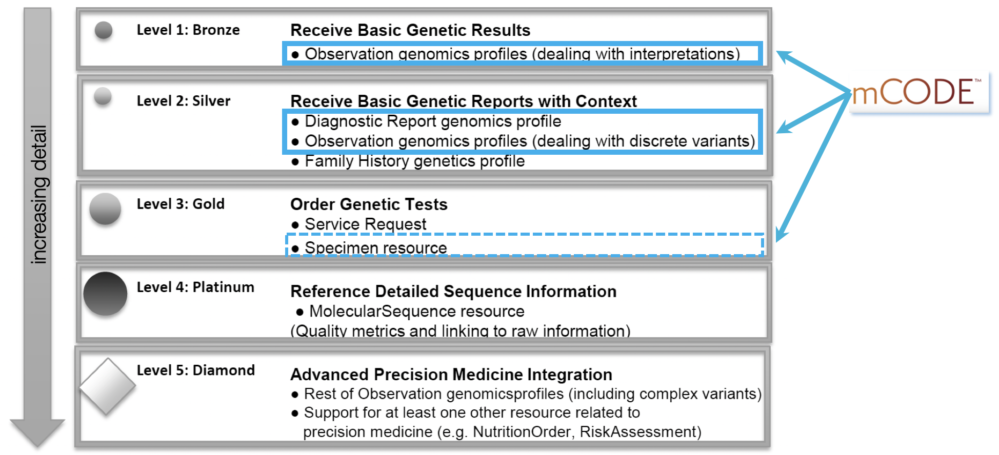

Genomics is the study of the totality of DNA sequence and gene expression differences between tumor cells and normal host cells. It aims to understand the genetic basis of tumor cell proliferation and the evolution of the cancer genome under mutation and selection by the body environment, the immune system and therapeutic interventions (source: Nature).
mCODE will only include the minimal set of genetic related elements relevant to capture in an EHR to drive treatment options. In a tiered framework of adoption noted by the HL7 Clinical Genomics Working Group (CGWG), mCODE minimally aligns with levels 1 and 2. This is illustrated in the diagram below.
mCODE at this time is loosely based on HL7 CGWG Clinical Genomics Reporting Implementation Guide.
mCODE allows for different coding systems like the Logical Observation Identifiers and Names (LOINC) and local codes to specify the genomics test or panel provided that a the coding system or ID convention is specified. While Genetic Testing Registry (GTR) is currently the best source for identifying genetic tests, the user should be aware that the GTR cannot be a sole reliable source since the test data is voluntarily updated and there is no overarching data steward.
References used in the mCODE biomarker model include: